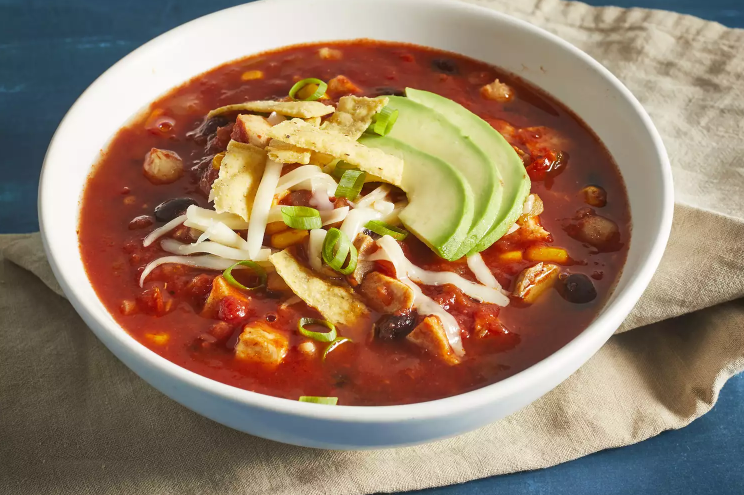

Hearty Mexican Tortilla Soup

Add some spice to your life this fall with a warm, hearty bowl of this Mexican inspired classic.
Source: Allrecipes.com
This tortilla soup with shredded chicken, black beans, and corn is quick to make, full of flavor, and very filling! It's garnished with chopped fresh avocado, Monterey Jack cheese, crushed tortilla chips, and green onion.
Prep Time: 15 Minutes
Cook Time: 25 Minutes
Total Time: 40 Minutes
Portions: 8 Servings
Ingredients
- Olive oil [1 tbsp]
- Red onion, chopped [one, medium]
- Garlic, minced [3 cloves]
- Tomatoes, crushed [one can, 28 oz]
- Condensed chicken broth [one can, 10.5 oz]
- Chili powder [2 tbsp]
- Dried oregano [1 tsp]
- Black beans [one can, 15 oz]
- Boneless chicken breast, cooked [2 halves]
- Avocado, sliced [2, medium]
- Monterey Jack cheese, shredded [1/2 cup]
- Whole corn kernells, cooked [1 cup]
- Green chili peppers, chopped [1/4 cup]
- Green chili onions, chopped [2 tbsp]
- Fresh chilantro, chopped [1/4 cup]
- Tortilla chips, crushed [2 cups]
- Water [1 cup]
Directions:
- Heat oil in a stockpot over medium heat.
- Add onion and garlic, saute until soft for about 5 minutes.
- Stir in crushed tomatoes, condensed broth, water, chili powder, and oregano and bring to a boil.
- Reduce heat and simmer for 5 to 10 minutes.
- Stir in black beans, cooked chicken, corn, chile peppers, and cilantro then simmer for 10 minutes.
- Ladle soup into individual serving bowls, and top with crushed tortilla chips, avocado slices, Monterey Jack cheese, and green onions.